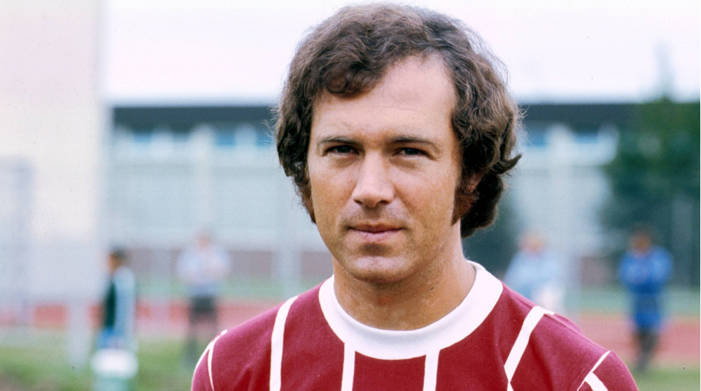

Quiz da Copa do Mundo
1. Qual país venceu a Copa do Mundo de 1966?
Alemanha
Uruguai
Argentina
Inglaterra
2. Quem é o maior artilheiro da história das Copas?
Pelé
Miroslav Klose
Ronaldo
Lionel Messi
3. Em que ano o Brasil conquistou seu primeiro título mundial?
1962
1958
1970
1994
4. Qual seleção foi vice-campeã em 2014?
Espanha
Argentina
Alemanha
Holanda
5. Quantas vezes a Itália venceu a Copa do Mundo?
2
4
3
5
6. Quem é este jogador?

Franz Beckenbauer
Maradona
Johan Cruyff
Cafu
7. Qual jogador fez o famoso "Gol de Hand of God" na Copa do Mundo de 1986?
Aguero
Rivellino
Pelé
Maradona
8. Em qual edição da Copa do Mundo a seleção da Argentina conquistou seu primeiro título?
1982
1978
1990
1986
9. Quantos gols o Pelé fez em sua carreira?
1273
1281
1280
1283
10. Quando vai ser realizada a próxima copa do mundo?
2028
2026
2025
2030
Ver Resultado